Chapter 3. 회귀(Regression)¶
1절. 회귀
2절. 경사 하강법
3절. 과잉 적합과 과소 적합
4절. 회귀 구현
1절. 회귀¶
회귀와 분류¶
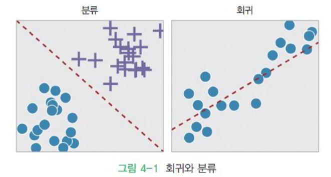
선형 회귀¶
- 데이터들을 2차원 공간에 찍은 후 데이터들을 가장 잘 설명하는 직선 OR 곡선을 찾는 문제
- 입력 데이터를 가장 잘 설명하는 기울기와 절편값을 찾는 문제
- \(y = f(x)\)에서 출력 \(y\)와 입력 \(x\)가 실수일 때, 함수 \(f(x)\) 예측
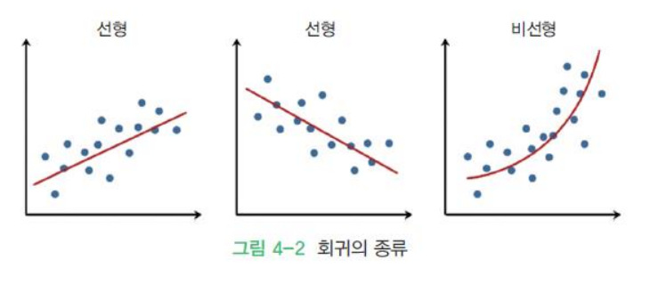
- 직선의 방정식 : \(f(x) = mx + b\)
- 선형 회귀 기본식 : \(f(x) = Wx + b\)
- 기울기 -> 가중치
- 절편 -> 바이어스
선형 회귀 예시¶
- 부모의 키와 자녀 키의 관계 조사
- 면적에 따른 주택 가격
- 연령에 따른 실업율 예측
- 공부 시간과 학점과의 관계
- CPU 속도와 프로그램 실행 시간 예측
선형 회귀 종류¶
- 단순 선형 회귀
- 독립 변수(\(x\))가 하나인 경우
- \(f(x) = wx + b\)
- 다중 선형 회귀
- 독립 변수가 여러 개인 경우
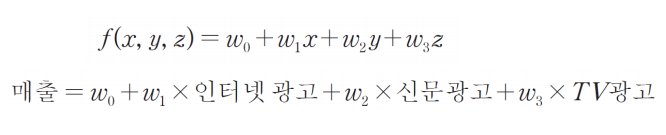
선형 회귀 원리¶
import numpy as np
from sklearn.linear_model import LinearRegression
X = 10 * np.random.randn(100, 1)
y = 3 + X + np.random.randn(100, 1)
plt.plot(X, y, 'o')
plt.show()
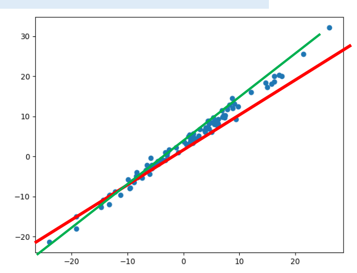
- 최선의 것은 데이터 간의 오차가 작은 경우
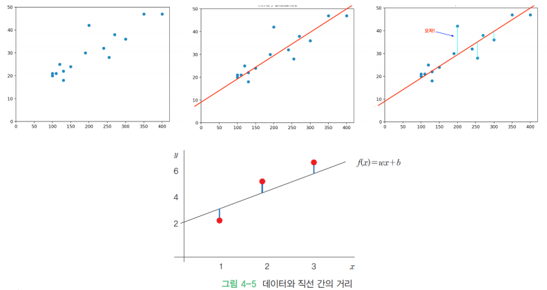
손실 함수(Loss Function)¶
- 손실 함수 또는 비용 함수(Cost Function)
- 직선과 데이터 사이의 간격을 제곱하여 합한 값
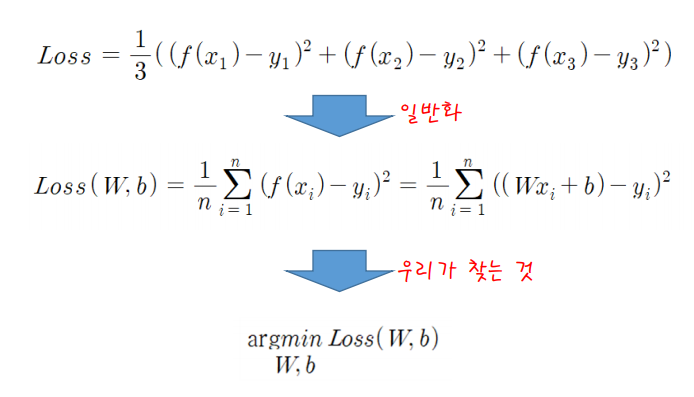
- 선형 회귀 선과의 차이가 큰 경우 손실이 큼
- 선형 회귀 선과의 차이가 작은 경우 손실이 작음
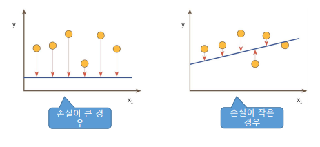
선형 회귀에서 손실 함수 최소화 방법¶
- 분석적인 방법
- 독립 변수와 종속 변수가 각각 하나인 선형 회귀
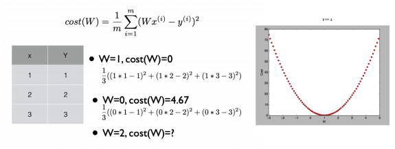
2절. 경사 하강법¶
경사 하강법(Gradient descent method)¶
- Cost 함수 그래프를 그리면 아래와 같은 2차 포물선 생성
- 손실 함수가 어떤 형태이더라도, 매개 변수가 아무리 많아도 적용 가능한 일반적인 방법
- 점진적인 학습 가능
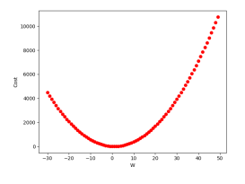
import numpy as np
import matplotlib.pyplot as plt
import tensorflow as tf
def forward(wa, x):
return wa * x
X = np.array([1., 2., 3.])
Y = np.array([1., 2., 3.])
W_val = []
cost_val = []
m = n_samples = len(X)
for i in range(-30, 50):
W_val.append(i )
print(forward(i ,X))
cost_val.append(tf.reduce_sum(tf.pow(forward(i ,X)-Y, 2))/(m))
plt.plot(W_val, cost_val, 'ro')
plt.ylabel('Cost')
plt.xlabel('W')
plt.show()
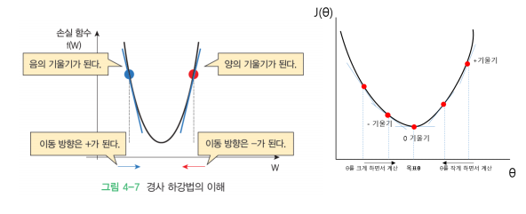
학습률¶
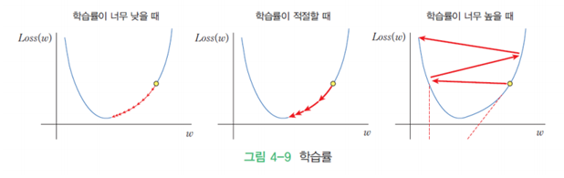
지역 최솟값 문제¶
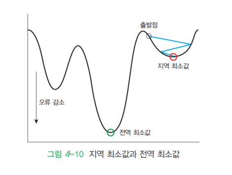
선형 회귀에서의 경사 하강법¶
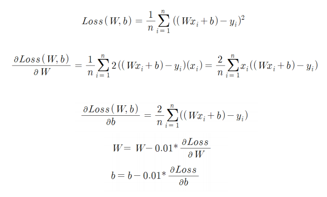
경사 하강법 코드 구현¶
import numpy as np
import matplotlib.pyplot as plt
X = np.array([0.0, 1.0, 2.0])
y = np.array([3.0, 3.5, 5.5])
W = 0 # 기울기
b = 0 # 절편
lrate = 0.01 # 학습률
epochs = 1000 # 반복 횟수
n = float(len(X)) # 입력 데이터의 개수
# 경사 하강법
for i in range(epochs):
y_pred = W*X + b # 예측값
dW = (2/n) * sum(X * (y_pred-y))
db = (2/n) * sum(y_pred-y)
W = W - lrate * dW # 기울기 수정
b = b - lrate * db # 절편 수정
# 기울기와 절편을 출력
print (W, b)
# 예측값
y_pred = W*X + b
# 입력 데이터를 그래프에 plot
plt.scatter(X, y)
# 예측값은 선그래프
plt.plot([min(X), max(X)], [min(y_pred), max(y_pred)], color='red')
plt.show()
# 1.2532418085611319 2.745502230882486 (기울기 절편 순서)
선형 회귀 예제¶
- 아나콘다에 포함된 Scikit-Learn 라이브러리를 사용하여 회귀 함수를 구현하는 방법
모델 생성 및 학습¶
import matplotlib.pylab as plt
from sklearn import linear_model
# 선형 회귀 모델을 생성
reg = linear_model.LinearRegression()
# 데이터는 파이썬의 리스트와 넘파이의 배열 모두 가능
X = [[0], [1], [2]] # 2차원으로 만들어야 함
y = [3, 3.5, 5.5] # y = x + 3
# 학습
reg.fit(X, y)
학습 데이터 생성¶
- 학습 데이터는 반드시 2차원 배열
- 한 열만 있더라도 반드시 2차원 배열 형태
- 리스트의 리스트를 생성하여 2차원 배열 생성
값 확인¶
# 직선의 기울기
reg.coef_
# array([1.25])
# 직선의 y-절편
reg.intercept_
# 2.7500000000000004
reg.score(X, y)
# 0.8928571428571429
reg.predict([[5]])
# array([8.])
그래프 생성¶
# 학습 데이터와 y 값을 산포도화
plt.scatter(X, y, color='black')
# 예측값을 계산
y_pred = reg.predict(X)
# 학습 데이터와 예측값을 선그래프로
# 계산된 기울기와 y 절편을 가지는 직선
plt.plot(X, y_pred, color='blue', linewidth=3)
plt.show()
실행 결과¶
선형 회귀 실습¶
- 인간의 키와 몸무게는 어느 정도 비례할 것으로 예상
- 아래의 데이터가 있을 경우 선형 회귀를 이용하여 학습시켜 키가 165cm일 때의 예측값 계산
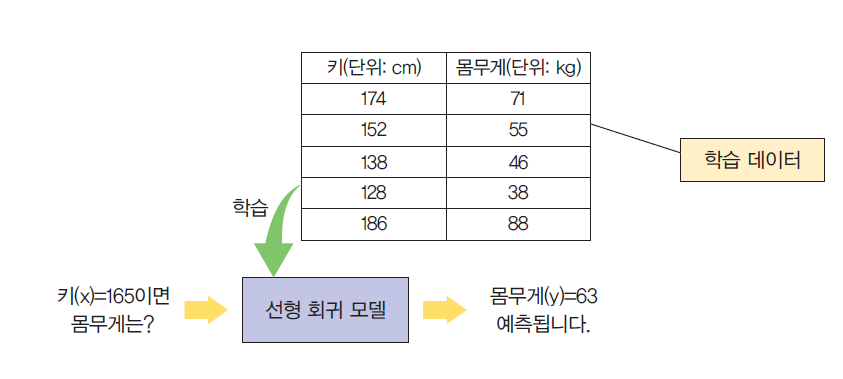
정답 코드¶
import matplotlib.pylab as plt
from sklearn import linear_model
reg = linear_model.LinearRegression()
X = [[174], [152], [138], [128], [186]]
y = [71, 55, 46, 38, 88]
# 학습
reg.fit(X, y)
print(reg.predict([[165]]))
# 학습 데이터와 y값 산포도화
plt.scatter(X, y, color='black')
# 학습 데이터를 입력으로 하여 예측값을 계산
y_pred = reg.predict(X)
# 학습 데이터와 예측값으로 선그래프로
# 계산된 기울기와 y 절편을 가지는 직선
plt.plot(X, y_pred, color='blue', linewidth=3)
plt.show()
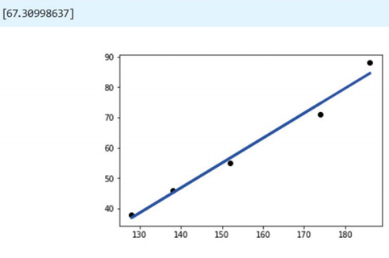
선형 회귀 예제 - 당뇨병¶
- sklearn 라이브러리에 기본적으로 포함된 당뇨병 환자들의 데이터 사용
import matplotlib.pylab as plt
import numpy as np
from sklearn.linear_model import LinearRegression
from sklearn import datasets
# 당뇨병 데이터 세트
diabetes_X, diabetes_y = datasets.load_diabetes(return_X_y=True)
# 하나의 특징(BMI)으로 2차원 배열화
# BMI 특징의 인덱스가 2
diabetes_X_new = diabetes_X[:, np.newaxis, 2]
# 학습 데이터와 테스트 데이터를 분리
from sklearn.model_selection import train_test_split
X_train, X_test, y_train, y_test = train_test_split(diabetes_X_new, diabetes_y, test_size = 0.1, random_state = 0)
regr = linear_model.LinearRegression()
regr.fit(X_train, y_train)
# 테스트 데이터로 예측
y_pred = model.predict(X_test)
# 실제 데이터와 예측 데이터를 비교
plt.plot(y_test, y_pred, '.')
plt.xlim([-0.13,0.15])
plt.scatter(X_test, y_test, color ='black')
plt.plot(X_test, y_pred, color ='blue', linewidth = 3)
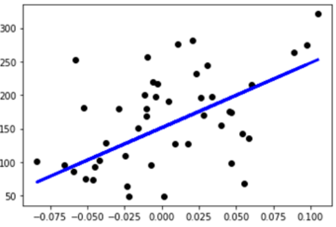
3절. 과잉 적합과 과소 적합¶
과잉 적합(overfitting)¶
- 학습하는 데이터는 성능이 뛰어나지만 새로운 데이터(일반화)에 대해서는 성능이 잘 나오지 않는 모델을 생성하는 것
과소 적합(underfitting)¶
- 학습 데이터에서도 성능이 좋지 않은 경우
- 이 경우에는 모델 자체가 적합 지 않은 경우 존재
- 더 나은 모델 탐색 필요
과잉 적합과 과소 적합 비교¶
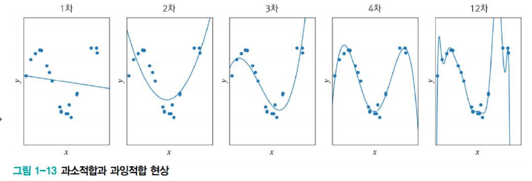
- 1차 : 과소 적합
- 모델의 용량이 작아 오차가 클 수밖에 없는 현상
-
2차, 3차, 4차의 순서가 지날 수록 오차가 감소하는 모습
-
12차 : 과잉 적합
- 다항식 곡선을 채택한다면 훈련집합에 대해 거의 완벽하게 근사화
- '새로운' 데이터를 예측한다면 큰 문제가 발생
- \(x_0\)에서 빨간 막대 근방을 예측해야 하지만 빨간 점을 예측하는 상황이 발생할 수 있음
- 용량이 크기 때문에 학습 과정에서 잡음까지 수용(과잉 적합 현상)
- 적절한 용량의 모델을 선택하는 모델 선택 작업 필요
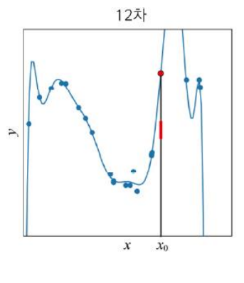
- 그래프에서 보는 과잉 적합과 과소 적합의 비교
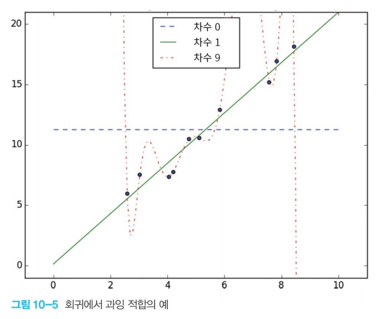
4절. 로지스틱 회귀¶
선형 회귀 vs 로지스틱 회귀(Logistic Regression)¶
-
선형 회귀
-
MSE(Mean Squared Error)라는 Loss 함수 사용
- 직선과 데이터의 차이를 제곱한 값의 평균
- 즉, 분산을 최소화 시키는 방향으로 학습
-
로지스틱 회귀
- 분류 모델은 이진 분류 모델
- 클래스가 2개 있을 경우에만 사용 가능
- 선형 회귀 다음으로 간단한 분류, 회귀 알고리즘
- 데이트 샘플에 맞는 최적의 로지스틱 함수 계산
- 이를 통해(데이터 특성으로) 예측 값 추출
- 선형 회귀 모델 => 연속성
- 선형 회귀의 출력값 분류 방법
- 전체의 절반을 넘었으면 반올림 후 출력을 1로 설정
- 전체의 절반을 넘기지 못했으면 출력을 0으로 설정
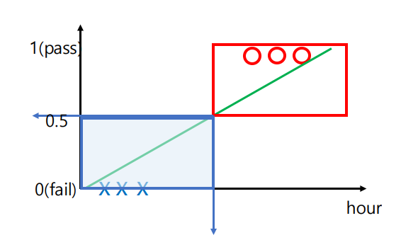
- 직선의 중간쯤을 넘어가면 불합격
- 직선의 중간쯤을 넘어가면 합격
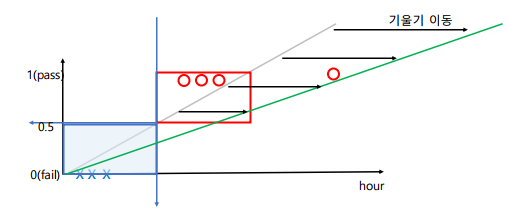
- 데이터(\(y\))와 직선(\(^y\))간의 평균을 최소화하기 위한 직선의 기울기 움직임
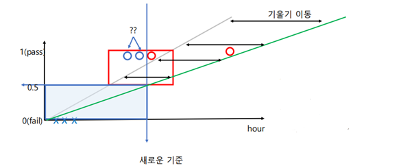
- 기울기 \(y = wx + b\) 에서 \(w\)의 변화에 따른 0.5 의 기준 변화
- 함숫값이 0.5를 지나는 구간의 변경
- 이에 다른 데이터들의 정답 여부 변경
- 원래 정답이었으나 기준 선이 오른쪽으로 움직여서 오답
선형 회귀와 로지스틱 회귀의 비교¶
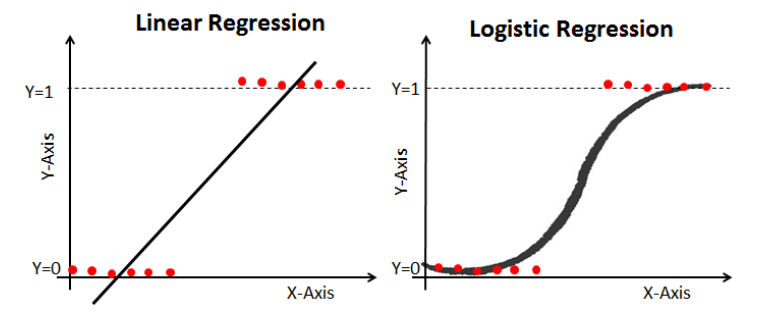
시그모이드 함수(Sigmoid)¶
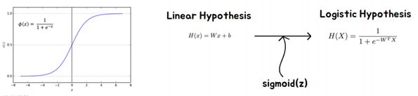
- Logistic Regression에서는 Linear Regression의 결과값을 인풋값으로 사용
- 시그모이드 함수는 곧 베이즈 정리
- 기존에 사용했던 선형회귀 모델의 출력을 그대로 시그모이드 함수의 입력으로 넣으면 0 OR 1의 값을 출력
- 위의 값으로 예측 수행
- 기존의 출력은 \(y = wx + b\)
- 위 출력을 시그모이드 함수 \(sigmoid(z)\)의 입력으로 넣을 경우
- y = \(\frac{1}{1+e^{-(wx+b)}}\)
- 위 값은 0 또는 1에 가까운 분류값
가장 좋은 가중치 W의 값¶
- Cost Function 초기화
- Linear Regression은 MSE로 최솟값 가능
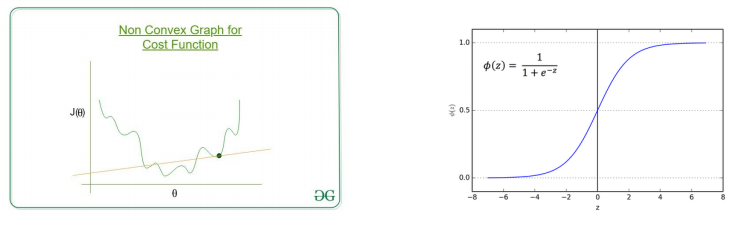
- 하지만 Logistics Regression은 불가
- Log Loss(Cross Entropy 사용)
Cross Entropy Loss 함수¶
- 로지스틱 모델의 예측 분포는 \(sigmoid(wx + b)\)
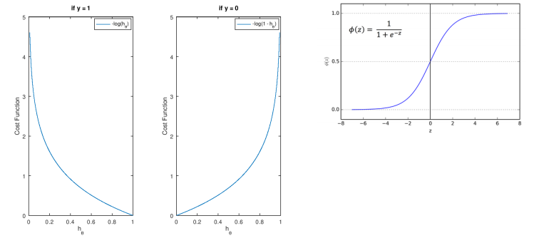
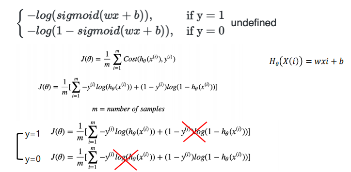
로지스틱 회귀¶
-
장점
-
Cross Entropy Loss 함수를 적용한 알고리즘
- Cross Entropy Loss 함수를 가장 처음으로 이해하기 좋은 알고리즘
- 선형적인 문제를 간단하게 풀 때 매우 효과적
-
전세계적으로 가장 사랑받는 머신러닝 알고리즘
-
단점
- 이진 분류만 가능(클래스가 2개 있을 때만 사용 가능)
- 복잡한 비선형 문제를 해결하는데 큰 어려움
- 다중공선성과 같은 문제 자체적 해결 불가
예제 - 유방암 분류¶
import pandas as pd
from sklearn import datasets
from sklearn.linear_model import LogisticRegression
# 0 : 양성 / 1 : 악성
cancer_ds = datasets.load_breast_cancer()
clf = LogisticRegression(multi_class = 'ovr', solver='liblinear') #one-vs-rest (OvR)
clf.fit(cancer_ds.data , cancer_ds.target)
clf.predict(cancer_ds.data)- cancer_ds.target
clf.score(cancer_ds.data, cancer_ds.target)